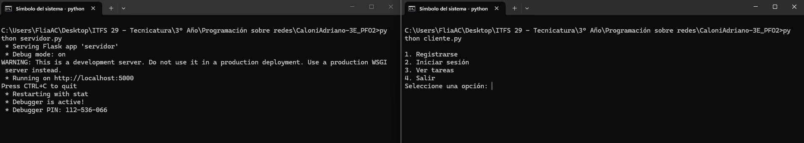
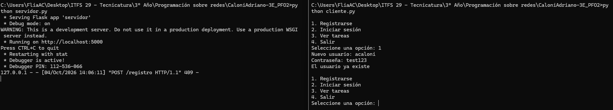
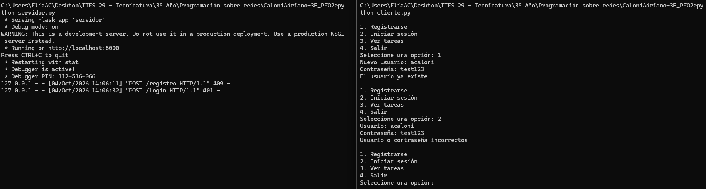
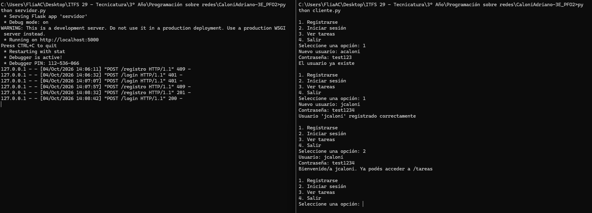
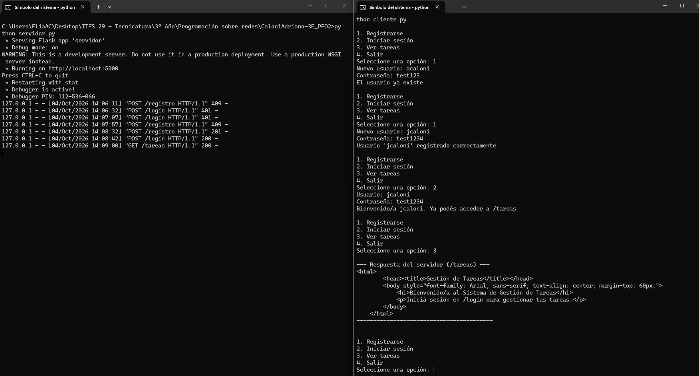
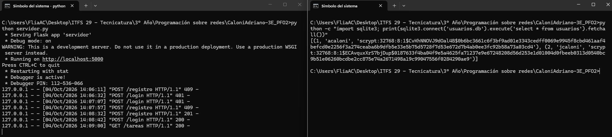
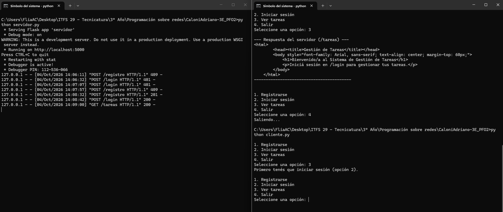
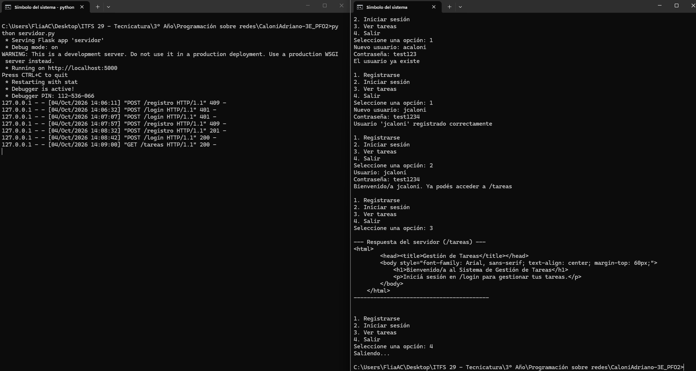

¿Qué hace el proyecto?
Un servidor API REST hecho con Flask que permite registrar usuarios con contraseñas hasheadas, iniciar sesión, y acceder a un endpoint de bienvenida al sistema de tareas. Los datos se guardan en una base de datos SQLite. Incluye además un cliente de consola que interactúa con la API.
POST /registro - crea un usuario nuevo
POST /login - verifica las credenciales
GET /tareas - HTML de bienvenida al sistema
Cómo ejecutarlo
pip install -r requirements.txt python servidor.py # Terminal 1 python cliente.py # Terminal 2
El servidor queda escuchando en http://localhost:5000. El cliente muestra un
menú con las opciones registrarse, iniciar sesión, ver tareas y salir.
Pruebas realizadas
| N° | Prueba | Resultado |
|---|---|---|
| 1 | Inicio del servidor y del cliente | Correcto |
| 2 | Registro con un usuario que ya existe | Correcto (error 409 controlado) |
| 3 | Login con contraseña incorrecta | Correcto (error 401 controlado) |
| 4 | Registro y login exitosos | Correcto |
| 5 | Acceso a /tareas tras iniciar sesión | Correcto |
| 6 | Verificación del hash en la base de datos | Correcto |
| 7 | Intento de ver tareas sin haber iniciado sesión | Correcto |
1. Inicio del servidor y del cliente
Se inicia el servidor Flask en localhost:5000 en una terminal, y el cliente
de consola en otra, mostrando el menú de opciones.

2. Registro con un usuario que ya existe
Se intenta registrar un usuario (acaloni) que ya estaba creado de una prueba
anterior. El servidor responde con el error controlado "El usuario ya existe" (código HTTP 409),
sin romperse.

Resultado: el servidor detecta el usuario duplicado y lo informa con un mensaje claro, en vez de guardar un registro repetido.
3. Login con contraseña incorrecta
Con el usuario acaloni ya registrado, se intenta iniciar sesión con una
contraseña distinta a la original.

Resultado: el servidor responde "Usuario o contraseña incorrectos" (código HTTP 401) y no otorga acceso a /tareas.
4. Registro y login exitosos
Se registra un usuario nuevo (jcaloni) y se inicia sesión con esas mismas
credenciales.

Resultado: "Usuario 'jcaloni' registrado correctamente" y luego "Bienvenido/a jcaloni. Ya podés acceder a /tareas".
5. Acceso a /tareas tras iniciar sesión
Ya logueado como jcaloni, se elige la opción "Ver tareas" en el cliente.

Resultado: se recibe el HTML de bienvenida al sistema de gestión de
tareas. En la terminal del servidor se ve el log GET /tareas HTTP/1.1" 200.
6. Verificación del hash en la base de datos
Para comprobar que la contraseña nunca se guarda en texto plano, se consultó directamente
la tabla usuarios de usuarios.db:

Resultado: los dos usuarios registrados (acaloni y
jcaloni) tienen cada uno un hash scrypt distinto e irreversible en
contrasena_hash, nunca la contraseña en texto plano.
7. Intento de ver tareas sin haber iniciado sesión
Al reiniciar el cliente y elegir directamente la opción "Ver tareas" sin pasar antes por el login, el cliente no deja continuar.

Resultado: el cliente responde "Primero tenés que iniciar sesión (opción 2)" y no llega a consultar /tareas.
Cierre del cliente
Al elegir la opción "Salir", el cliente termina de forma ordenada y devuelve el control a la terminal.

Respuestas conceptuales
¿Por qué hashear contraseñas?
Porque si la base de datos se filtra o alguien accede a ella sin autorización, una
contraseña en texto plano queda expuesta directamente. Un hash es el resultado de una función
que transforma la contraseña en una cadena que no se puede revertir a la contraseña original.
Al guardar el hash en vez del texto plano, aunque alguien acceda a la base de datos no puede
leer las contraseñas reales, y para iniciar sesión alcanza con volver a hashear lo que escribe
el usuario y compararlo con el hash guardado (check_password_hash), sin necesidad
de desencriptar nada.
Ventajas de usar SQLite en este proyecto
SQLite no necesita un proceso de servidor aparte: la base de datos es un solo archivo
(usuarios.db) que se crea y se lee desde el propio código Python con el módulo
sqlite3, que ya viene incluido con el lenguaje. Para un proyecto chico como este,
eso evita instalar y configurar un motor de base de datos adicional (como MySQL o PostgreSQL),
simplifica las pruebas locales (el archivo se puede borrar y se regenera solo) y alcanza de
sobra en rendimiento para la cantidad de usuarios que maneja un trabajo práctico.